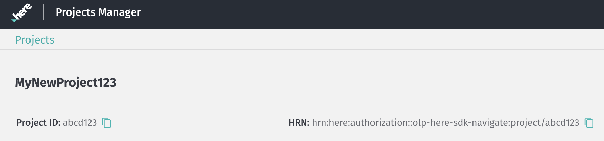

Pricing
Understand the pricing structure, track transactions and usage statistics, set scopes for differentiating multiple apps, explore pricing and transaction categories, and learn how the HERE SDK calculates monthly active users.
Transactions and Usage Stats
With the UsageStats class you can gathers statistics of the HERE SDK network usage to count all uploaded and downloaded data. Use sdkNativeEngine.getSdkUsageStats() and sdkNativeEngine.enableUsageStats() to retrieve the network statistics. With sdkNativeEngine.clearPersistentUsageStats() and sdkNativeEngine.clearUsageStatsCache() you reset the counters.
Note that calling enableUsageStats() is not persisted by the HERE SDK - same as for other settings: therefore, UsageStats should be enabled every time before the initialization of the HERE SDK - if they have been enabled before at runtime and if you want to continue to track the network statistics. Also, please note that the gathered data is only counting HERE SDK usages for the executed app on a device.
Information on transactions per account can be found on the HERE platform: take a look at the usage dashboard which is part of the Usage Manager.
Set a scope to differentiate multiple apps
In this section we will explain the correlation between app credentials and a project scope.
A scope is not always necessary:
If you are developing only one app with the HERE SDK, you do not need to work with the Projects Manager that can be found on the HERE platform and you can skip the following section.
If you are developing multiple apps, then you need to reuse the same set of credentials. In order to be able to see statistics for each app individually, you need to set a scope. Make sure to read the following section.
A project scope is used to determine specific services for a certain development project. Setting a scope will disable access to all other HERE services except specifically defined. Typically, when you develop an app with the HERE SDK, using one set of credentials for one app is sufficient. In that case setting a project scope is also not required. If this is the case, this section is not relevant for you.
If you intend to use one set of credentials for developing several different apps with the HERE SDK, please read on.
The HERE platform supports Projects, which allow developers to manage their app with additional possibilities to further restrict and customize app access and its entitlements. This is done with the Projects Manager you can find when you log into the HERE platform. See the IAM Guide for more details on how to set up a project.
Furthermore, setting an app with a project via Projects Manager will enable you to see the app in the downloaded usage report. This enables you to distinguish the usage statistics behind your app based on the project's HRN value in addition to the appId. A HERE Resource Name (HRN) is a unique identifier of catalog, schema, and pipeline resources as well as of platform projects and apps. The HRN is generated automatically by the HERE platform when a resource, project, and app is created and cannot be modified. You can use the HRN to specify the project scope for requests to the HERE platform (this is recommended to enable better usage tracking).
Other use cases may be, for example, to define a debug scope for testing a staging app and a production scope for the final app.
Note that in your HERE account you can also find an Apps section, which does not refer to mobile applications. This Apps section can be ignored here, as in the following we only need the Projects Manager to configure a project that belongs to the mobile app you plan to develop.
Note
By default, when creating a project via Projects Manager an associated app needs to be configured with services and - depending on your edition - a map catalog to enable the relevant APIs you plan to use from the HERE SDK.
If this is not done, an app will use the default project settings and some requests made with the HERE SDK will lead to an error message that no access is given. An error like 403: Not authorized to access the resources may be visible in the logs and the HERE SDK will return an error enum value - depending on the individual engine that is executed.
How to set up the required HERE services
- Login to your platform.here.com account.
- Open the Launcher menu and select Manage and then the Projects Manager. Then create a project and copy the project HRN string for later use. In the Projects Manager, you can define several projects / apps. Each project / app is identified through a unique HRN, for example: "hrn:here:authorization::olp-here-sdk-navigate:project/abcd123". The actual value is unique for your project / app.
- In the project settings, specify the required backend services needed by the HERE SDK (Resources -> Services -> Link a service).
List of required services
- HERE Isoline Routing
- HERE Network Positioning
- HERE Raster Tile
- HERE Routing
- HERE Routing - Transit
- HERE Search - Autosuggest
- HERE Search - Browse
- HERE Search - Forward Geocoder
- HERE Search - One Box Search
- HERE Search - Places ID Lookup
- HERE Search - Reverse Geocoder
- HERE Search - Traffic API
- HERE Vector Tile
- HERE Vector Tile - Traffic
Set the scope in your app
The next step is to set the project scope programmatically in your app. For this step, use the project HRN string you have copied above. For example: "hrn:here:authorization::olp-here-sdk-navigate:project/abcd123". The actual value is unique for your project / app.
Set the unique HRN value for your project as scope before initializing the HERE SDK:
sdkOptions.scope = "YOUR_PROJECT_HRN";
The screenshot below shows an example project with a Project ID and the resulting HRN value.

Note that a Project ID must be unique and cannot be changed for the lifetime of the organization's account. They affect also the HRN value as you can see in the screenshot. If the scope / HRN is set by an application, it will be used for authentication and the internal token creation of an application.
If an unknown scope is set, any authentication attempt would fail, and the application logs would indicate this.
More information can be found in the IAM guide. It contains also information on managing your projects.
Pricing and transaction categories
As described in the Get the HERE SDK package section, your pricing plan can include transactions per month and/or other parameters. Below you can find usage examples per transaction category (online usage only):
- Raster Tile: API example: Render satellite-based map schemes (
satellite,hybridDay,hybridNight,liteHybridDay,liteHybridNight) on the map view. Note that we still provide legacy access to the Map Tile service to access the API - find more information in the changelog. - Vector Tile: API example: Render the
MapViewin combination with OMV vector tiles. Applicable only for the Explore Edition. - Traffic Vector Tile: API example: Render
MapFeatures.trafficFlowand / orMapFeatures.trafficIncidentson the map view. Please note that each feature request is counted as an individual transaction. For instance, if a user requests both traffic flow and traffic incident data, this will be considered as two separate transactions by the HERE backend system. By default, new requests are triggered when new vector tiles are loaded during map panning and zooming or when the traffic backend's set validity time expires while the vector tiles are visible on the map view. You can adjust the default refresh period usingMapContentSettings.setTrafficRefreshPeriod(..), which allows overriding the backend's validity time to set a refresh period anywhere between 1 and 5 minutes. - Geocode & Reverse Geocode: API example for Geocode:
SearchEngine.searchByAddress(AddressQuery, ...). API example for Reverse Geocode:SearchEngine.searchByCoordinates(GeoCoordinates, ...). - Discover/Search: API example:
SearchEngine.searchByText(TextQuery, ...). - Autosuggest: API example:
SearchEngine.suggestByText(TextQuery, ...). - Routing Car, Bicycle, Pedestrian: API example: Calculate a route with the
RoutingEnginewithCarOptions,BicycleOptionsorPedestrianOptions. - Routing Scooter / Two-Wheeler: Only scooter is supported. API example: Calculate a route with the
RoutingEnginewithScooterOptions. - Taxi Routing: API example: Calculate a route with the
RoutingEnginewithTaxiOptions. - Truck Routing: API example: Calculate a route with the
RoutingEnginewithTruckOptions. - Time-Aware Routing: API example: Use
RouteOptionswitharrivalTimeordepartureTimeto calculate a route with theRoutingEnginewithTrafficOptimizationModenot disabled. - Routing EV: API example: Calculate a route with the
RoutingEnginewithEVTRuckOptionsorEVCarOptionsandevCarOptions.ensureReachabilityset totrue. - Route Import: API example:
RoutingEngine.importRoutes(...). - Toll Cost: API example: Calculate a route with the
RoutingEnginewithRouteOptions.enableTollsset totrue. - Routing Bus: API example: Calculate a route with the
RoutingEnginewithBusOptions. - Isoline Routing: API example: Calculate a route with the
RoutingEnginewithIsolineOptions. - Real-Time Traffic: API example: Request traffic flow data or incidents with the
TrafficEngine. - Public Transit: API example: Calculate routes with the
TransitRoutingEngine. - Network Positioning: API example: Get location updates with the
LocationEngineusing cellular of WiFi positioning. - Data IO: API example: Download or update offline maps with the
MapDownloaderor theMapUpdater.
Not all features are available for all editions. Note that this is not a complete list of all available features. On top, all transaction categories that are not relevant for the HERE SDK have been excluded from the above list.
How does the HERE SDK calculate monthly active users?
"Monthly Active User" or "MAU" means a unique device that calls HERE APIs through HERE SDK or uses the HERE SDK within a calendar month, as determined by HERE records.
Note that not all editions count MAU. Take a look at the Get the HERE SDK package section for your edition.